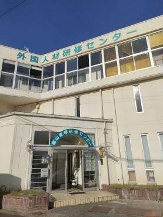
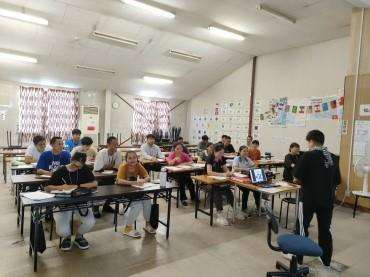
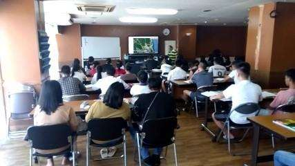

最大収容人数： 100名
〒720-2104 広島県福山市神辺町道上1123-1
TEL:084-936-1355
FAX:084-936-1520
MAIL: fukuyama@scchoice.co.jp
企業理念
『多様化の進む時代と共に進化し、未知の領域に挑戦・開拓する』
法令遵守・信頼•安心を行動指針とし、企業及び来B する技能実習生・特定技能との架け橋となり、日本の技術を世界に広める国際貢献に努めます。
研修センター紹介
「世界に羽ばたく希望を育む」
入国後講習～企業配属後の監理・支援まで、一貫した教育が強みです。
報連相・5S 指導・マナー教育など特化したカリキュラムで
ルール教育を徹底的に実施。
配属後にいち早く職場に馴染めるように指導します。
広島県 福山東部研修センター


茨城県 常総研修センター


最大収容人数： 180名
〒303-0031 茨城県常総市水海道山川町1076-2
TEL:0297-38-5656
FAX:0297-38-4355
MAIL: hope@choicehope.com
外国人技能実習制度
外国人技能実習制度は、日本が先進国としての役割を果たしつつ国際社会 との調和ある発展を図っていくため、技能、技術又は知識の開発途上国等 への移転を図り、開発途上国等の経済発展を担う「人づくり」に協力することを 目的としています。
技能実習生の受入れ可能な職種
農業関係
林業 耕種農業 畜産農業
漁業関係
建設関係
食品製造関係
繊維・衣服関係
機械・金属関係
その他（介護を含む21職種38作業）
外国人特定技能制度
中小・小規模事業者をはじめとした人手不足は深刻化しており、日本の経済・社会基盤の持続可能性を阻害する可能性が出てきているため、生産性向上や国内人材確保のための取組を行っても、なお人材を確保することが困難な状況にある産業上の分野において、一定の専門性・技能を有し即戦力となる外国人を受け入れていく仕組みを構築するために特定技能制度が創設
①介護関係 ②漁業関係 ③製造関係 ④飲食料品製造関係 ⑤造船・舶用関係 ⑥航空関係 ⑦外食関係 ⑧農業関係 ⑨自動車整備関係 ⑩宿泊関係 ⑪ビルクリーニング ⑫外食関係
送出し国紹介
• インドネシア送出し機関～夢PT-IMPIAN~ ドリームマンパワー • カンボジア送出し機関～ DREAM MANPOWER~ ユメ • ミャンマー送出し機関~ YUME~ ビナコム • ベトナム送出し機関~ VINACOM~ セントチョイス • 中国送出し機関～成都一巧思～